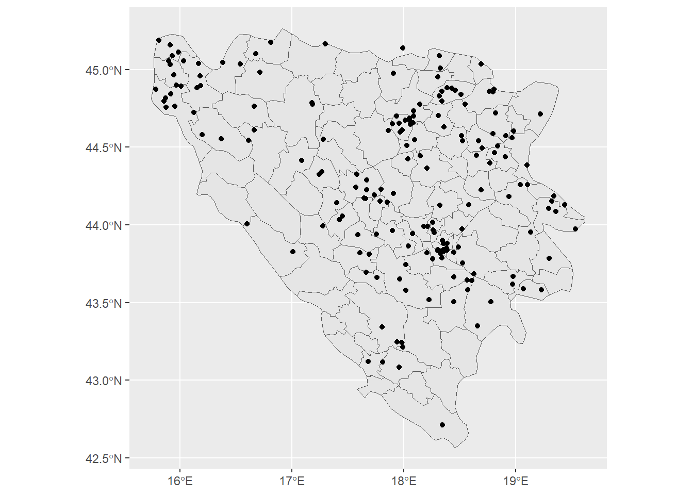

In previous lessons, you’ve learned about regular joins of data frames using commands, such as left_join(). With regular joins you combine information from two datasets, using a joint ID or key variable that exists in both datasets and identifies observations in both datasets.
A spatial join is similar to regular joins that it also describes a process to combine two datasets. But, in contrast to regular joins, we use spatial joins in a very special case, when two conditions are met:
We don’t have a joint key variable in the two datasets we want to combine. Think of the Bosnia datasets we used before. We had two data frames: one with the location of the events (the ged dataset) and another dataset with the shapes of the Bosnian municipalities (the bosnia_shp dataset). The observations in the ged dataset (i.e. the conflict events) do NOT have an ID variable that tells us in which municipality each event happened.
We have two spatial data frames. If the two datasets we want to combine are spatial data frames (i.e. data frames that we’ve transformed into sf data frames), then we can combine the two without having joint IDs.
If those two conditions are met, we can use spatial joins to combine the data.
How do we combine spatial data frames?
The core idea of a spatial join is to find out where the two spatial data frames overlap. The easiest way to visualize this is to consider the following map of the ged and the bosnia_shp data frames from the previous lesson:
library(tidyverse)library(sf)# read the Bosnia shapefile with st_read() => it's already an sf data frame# because of the .shp (shapefile) format!bosnia_shp <-st_read("../data/spatial_data/datasets/bosnia_shapefile/bosnia.shp", crs =4326)
Reading layer `bosnia' from data source
`C:\Dropbox\Work\Lehre\2023\2023 - STV4030A Digital Data in Political Science\stv4030A_quarto_website\STV4030A\data\spatial_data\datasets\bosnia_shapefile\bosnia.shp'
using driver `ESRI Shapefile'
Simple feature collection with 109 features and 2 fields
Geometry type: POLYGON
Dimension: XY
Bounding box: xmin: 15.74059 ymin: 42.56583 xmax: 19.61979 ymax: 45.26595
Geodetic CRS: WGS 84
# read the Bosnia GED eventsged <-read_csv("../data/spatial_data/datasets/ged.csv")# transform GED events into sf data frameged <- ged %>%st_as_sf(coords =c("longitude", "latitude"), crs =4326)ggplot() +geom_sf(data = bosnia_shp) +geom_sf(data = ged)

Spatial join: main concept
A spatial join is our main way of figuring out which points fall into which polygon. Put differently: spatial joins help us to create a joint key/ID variable (namely the ID of the underlying/overlapping polygon) to each point.
Spatial joins: procedure
Each spatial join follows a simple procedure:
Figure out to which data frame you want to attach IDs.
Run the spatial join command st_join()
Aggregate the point data to level of the polygon data & join aggregate into shapefile.
Plot/map data & analyze!
1. To which data frame do we want to attach IDs?
In our case, we want to attach to the ged data frame the IDs for each municipality in which they fall from the bosnia_shp data frame. Usually you want to attach polygon IDs (such as municipality IDs) to point data, but their might be cases where you want the opposite outcome.
A key element of this step is to have an idea of the outcome data frame that we want. Consider the ged data frame:
We want to add to these variables another variable, namely the id variable from the bosnia_shp data frame (the column with the values 108, 17, 116, etc):
Now that we know that we want to attach IDs to the ged data frame, we perform the spatial join. We use the st_join() function from the sf package to do so:
The first argument of the st_join() function is the dataset to which we want to add IDs
2
The second argument of the st_join() function is the dataset from which we get the IDs.
The st_join() function itself simply checks which points from ged fall into which municipality polygon from bosnia_shp and attach all the information of that municipality polygon to each observation of ged.
We assign the outcome to a new data frame ged_munic. This data frame has the same number of observation as ged but more variables, namely all the variables from bosnia_shp in which the respective observation (event) of ged falls.
It worked! The last two columns are the respective variables from the bosnia_shp data frame, indicating the municipality ID and name in which the event took place.
There was a slight complication though: since both the ged and the bosnia_shp data frames have the same variable name for the ID column (namely id), st_join() changes the names of those variables into id.x and id.y. Since this is a bit hard to read, we change the respective variable names, and perform the spatial join again.
Sometimes step (2) is all we want and we can continue analyzing data directly. This is the case, for instance, when our point data is survey data where each observation is one respondent. In such a case, we might be interested in e.g. the local economic performance of a municipality to use that value as a covariate in a regression.
However, in our case, we’re interested in comparing not individual events, but municipalities. Recall our main research question: in which municipality where there the most conflict events during the war in Bosnia?
To figure out the answer to this question, we need to aggregate the events to the municipality level. That means we need to count the number of events per municipality.
To count the number of events in each municipality we rely on the group_by() and summarize() functions, we’ve encountered in previous lessons.. Head back to that section for a refresher on how to do grouping and summarising before we apply it here. This chain of commands does the following things:
We drop the geometry column since we actually don’t need the spatial attributes of the points anymore. All the spatial magic happened in the st_join() command, the rest is now pretty basic (tidy) R commands.
2
We group by the id_munic variable, the variable that identifies the Bosnian municipality.
3
We count the number of events using the n() function. The n() function gives us the number of observation in each group specified by group_by()(so in this case in each id_munic)
Let’s look at the resulting data frame ged_munic_ag(_ag for “aggregated”).
It looks like we’ve achieved what we wanted: for each id_munic, we have a count of events that happened in that municipality.
Join aggregated data frame back into the polygon data frame
Now we need to join the aggregated data back into the main bosnia_shp data frame, so we can plot the data and find an answer to our research question.
This join is a simple left_join() that we know from the data wrangling lesson. No fancy spatial joins needed, since we now have two data frames with common IDs, namely the ged_munic_ag data frame and the bosnia_shp data frame.
Let’s join the data…
bosnia_shp_ged <-left_join(bosnia_shp, ged_munic_ag, by ="id_munic")
We see that we now have for every municipality a measure of the count of conflict events in that municipality–exactly what we wanted. But we also see that in same cases there is an NA for a municipality. That means that in this municipality there were no conflict events. Since we can only match municipality IDs to events, it’s logical that those municipalities are missing where we don’t have any events.
We can replace the NAs with zero, since in this case, missing means actually zero.
It looks like there is one municipality with a loooooot of conflict events, causing the automatic coloring of municipalities by the number of conflict events to become very difficult to see. We’ll talk about how to fix that problem in the next lesson on making maps.
We can also look at the data frame itself and sort by the number of conflict events to find an answer to our initial research question, in which municipality we observe the highest number of conflict events:
Here we see the answer to the problem indicated by the map: the municipality of Sarajevo, Bosnia’s capital, had more than 400 conflict events, by far the most. The municipality with the second most conflict events, Gorazde, “only” experienced 74 events, a magnitude smaller than the number of events in Sarajevo.
Next steps
We’ve answered our research question and we’ve learned how to perform spatial joins to answer the question. However, our basic attempts at mapping the resulting data look a bit… basic. Let’s look at how to improve the design of the map and how mapping works with the sf and the ggplot packages in the next section.